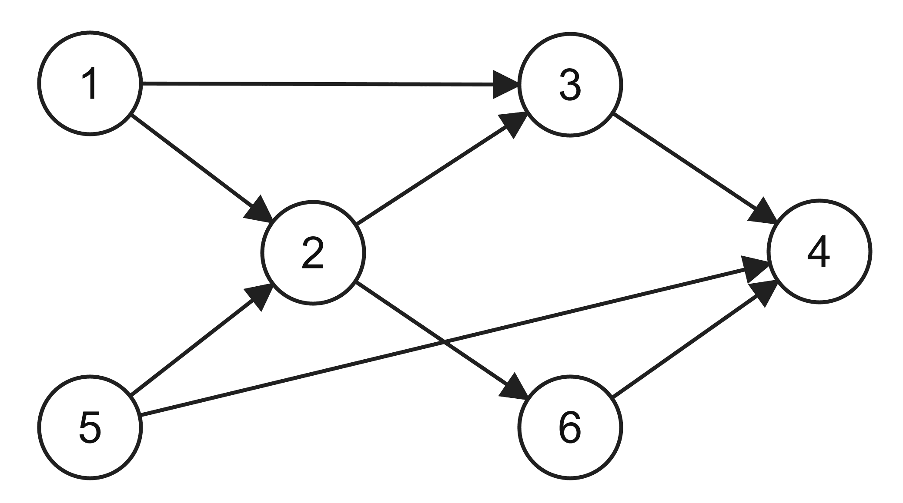

数据结构
2018-07
图的应用下列选项中，不是如下有向图的拓扑序列的是__。

答案
7
答案：D
本题讲解：拓扑序列的判定（入度法逐步模拟）
答案：D（不是拓扑序列）。
第一步：先立机制——拓扑序到底在要求什么
有向图里每条边 u→v 都是一条"先后约束"：u 必须排在 v 之前。一个序列是拓扑序列，当且仅当它不违反任何一条约束。落到操作上就是入度法：一个顶点的入度 = 还没排完的前驱个数。入度为 0，说明所有指向它的边的那一端都已输出，它可以安全地排下一个；输出它之后，要把它发出的所有出边一并"销账"，让后继的入度各减 1。判定给定序列，就按序列顺序逐个检查：轮到它时，它的入度是不是恰好为 0。
第二步：整理图与初始入度
由图得 8 条有向边：1→2、1→3、2→3、2→6、3→4、5→2、5→4、6→4。初始入度：1:0、5:0、2:2（来自 1、5）、3:2（来自 1、2）、4:3（来自 3、5、6）、6:1（来自 2）。第一个输出的只能从入度为 0 的 1、5 中选。
第三步：验证 A、B、C 均可行
- A：1,5,2,3,6,4——出 1 后 2:1、3:1；出 5 后 2:0、4:2；出 2 后 3:0、6:0；再出 3（4:1）、6（4:0）、4。每步入度恰好归零，可行。
- B：5,1,2,6,3,4——出 5（2:1、4:2）→ 1（2:0、3:1）→ 2（3:0、6:0）→ 6（4:1）→ 3（4:0）→ 4。可行。
- C：5,1,2,3,6,4——出 3 时，约束它的 1→3、2→3 已先后销账，3 的入度恰为 0；其余同 B。可行。
第四步：D 在第二步断链
D 是 5,2,1,6,3,4。第一步输出 5，只销掉 5→2、5→4 两条账，此时 2 的入度 = 2 − 1 = 1——边 1→2 还压着，前驱 1 还没输出。可序列下一个偏要输出 2：它入度不为 0，直接违反 1→2 的先后约束，拓扑排序到此无法继续。故 D 不是该图的拓扑序列，选 D。
易错点
- 只看相邻两个元素之间有没有边：约束是全序级的，必须逐个检查"轮到它时入度是否为 0"；相邻两点间无边不代表前面没有未满足的约束。
- 忘记销账：输出顶点后不删它的出边，后面所有入度全错；B、C 的判定都依赖正确销账。
- 错怪 6：D 的问题不在 6 排在哪，而在 2 抢在了 1 之前。
一句话：拓扑序 = 每条边起点先于终点；入度为 0 才能输出。D 中输出 2 时 1→2 还在，断链，选 D。